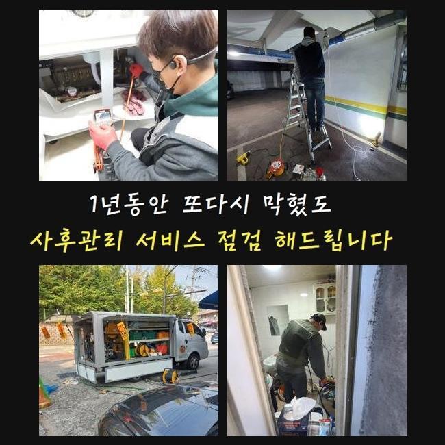
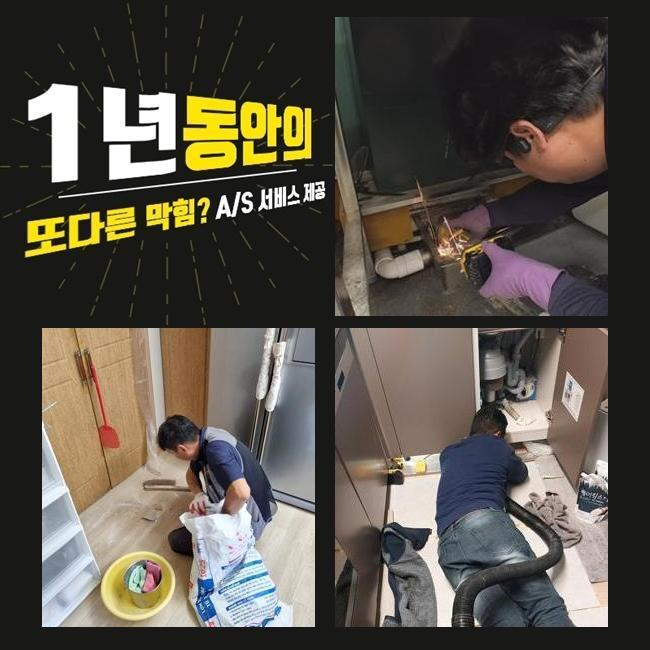
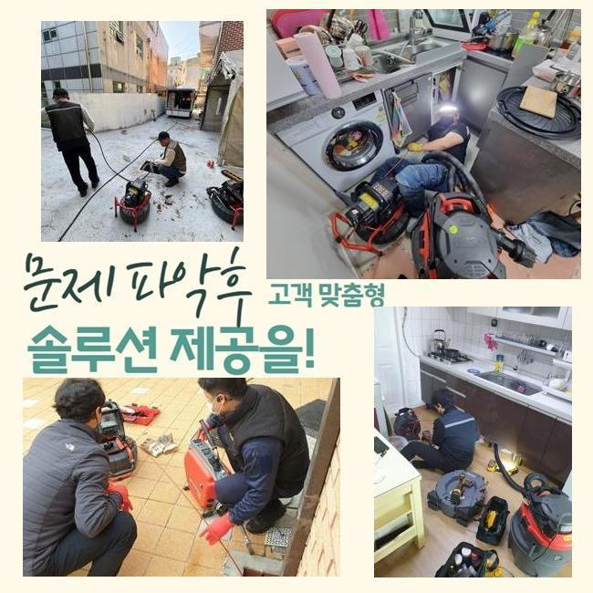
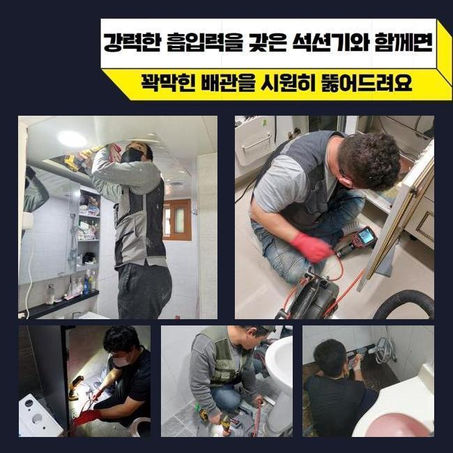
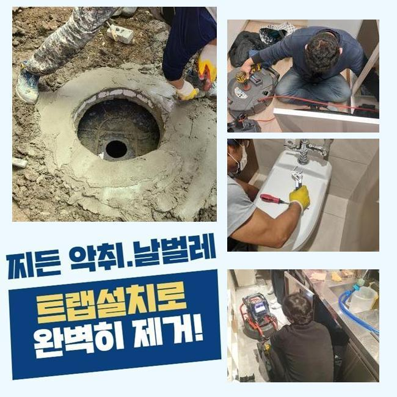
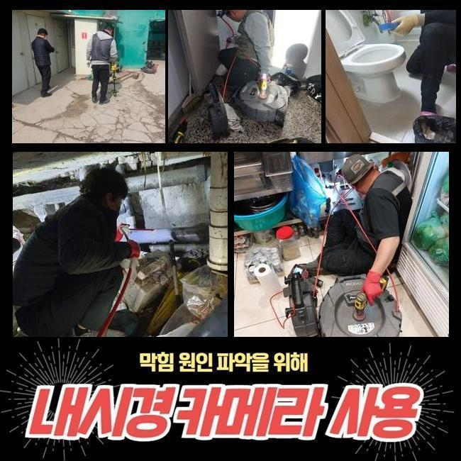
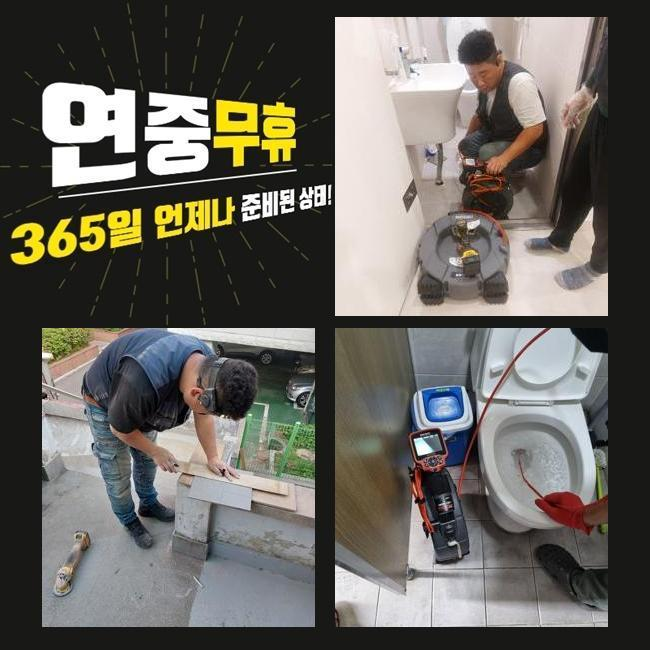

🏠 부천 심곡동씽크대배수구역류 중동 하수구청소 배관막힘뚫는업체
용인 싱크대막힘 전문 시공 후기

📋 작업 개요
- 위치: 용인
- 서비스 유형: 싱크대막힘, 하수구막힘, 배관막힘, 역류해결, 뚫는업체, 배관청소, 고압세척
- 작업 일시: 2025. 3. 8. 0:45
- 업체명: 하수구수사대 (010-5615-2118)
🔍 문제 상황
부천 심곡동씽크대배수구역류 중동 하수구청소 배관막힘뚫는업체
얼마전 근처의 상가에서 하수관의 역행이 벌어졌다는 이야기를 듣고 빠르게 손봐드리려고 현장으로 이동하게 되었습니다
단독주택이 아닌 경우라면 내부 장소마다 설치된 배수로가 메인줄기에서 만나는 모습을 갖추고 있는 건물들이 상당히 많아요
낱개의 한 배관에서 중단과 마비가 일어난다면 또다른 배수로도 고장이 나서 여러명이 설비결함에 따른 불편함을 겪어야만 할 수 있어요
이번에 하수구를 고쳐드린 장소는 여러 장소들이 모인 상가였는데 하루 아침에 하수구가 불능이 되는 바람에 영업을 할 수 없어서 불편감과 동시에 경제적 곤란까지 건물 자체에 비상이 걸렸다고 해요
많은 점포가 운영되는 건물에서 하수 트러블이 빈번하게 생긴다면 건물 내의 모든 사람들에게 곤란을 낳을 수 있는 부분이므로 의뢰받는 즉시로 현장에 찾아가고 있습니다
막힘으로 빚어진 피해의 수치가 심상치않은 곳부터 선제적으로 내방하여 통수 테스트를 우선 시행해봅니다
이러한 통수 테스트는 물을 받아서 붓거나 강력하게 오픈해서 관로 속으로 내려보낸 물이 어떠한 속도로 빠져나가나 체크하는 단계입니다
아래로 향하는 물의 유속이 낮아진데다 심지어 멈칫멈칫 하는 현상까지 분명히 존재한다는 사실을 목격하게 됐습니다
여러곳에서 하수막힘 문제가 야기됐다는 점은 배관의 내부 통로에 수많은 오염원인들이 자리하고 있을 가능성이 높다는 뜻입니다

🔎 원인 분석
💡 전문가 진단: 정밀 진단 장비를 사용하여 슬러지의 고착 여부를 판명하고 타격/세척 작업을 실시했습니다.
부피가 점점 불어났을 오물들을 모두 소강시키지 못할 경우에는 기하급수적으로 피해가 전이될 수 있다보니 시간을 최대한 단축시키려 노력했습니다
하수시설이 중단되게 하는 뿌리는 물이 나가는 통로를 메꿔버린 오물일 때가 많으니 전부 확인해서 정화를 해줘야 제기능으로 돌아갑니다
생활 중에 물을 쓰다보면 불순물이 만들어지게 되는데 물 속에 섞어들어서 배출이 되기 시작한다면 한 파트에 접착돼서 심각한 장애물으로 전락합니다
의도적으로 고형화된 물질들을 던져넣는 것이 아닐지라도 중금속이나 석회 성분 그리고 미네랄 등이 고체가 될 수 있습니다
내측 현황을 탐방해보니 기름 슬러지 혹은 머리카락과 같이 쓸려내려가지 않는 오물들이 형태를 알아보기 힘들게 뭉쳐있었습니다
조금씩 부피를 불려나가다가 짱돌같은 고체로 변모한다면 처치곤란의 방해물이 돼요
통로를 꽉 채운다면 깊숙한 곳에서 부패된 물의 역류도 뒷수습을 해야만 할 상태까지도 악화될 수 있습니다
배관 내부의 물에 담겨있다면 오염원이 급속도로 부패할 경우가 상당히 많고 축축하고 습한 냄새까지 실내 곳곳에 퍼져서 고정적인 집냄새가 되어버립니다
수분과 가까이하는 관로 특성상 배관은 언제나 습기가 차있기에 이물질의 부패도 스피드있고 두통을 유발하는 냄새도 풍겨져요
노폐물이 누적된 위치들이 다발적일 수 있다보니 총 문제점들을 발본색원해줘야 합니다
짧은 하수구 구간상의 오류라면 습식청소기의 단순 운용으로 물꼬를 틔울 수 있습니다

🔧 작업 과정
배관 자체가 독특한 형상이거나 연결점이 다수 자리하면 물살이 방해받는 구간들이 기대이상으로 꽤 여러개 보이기도 합니다
그러므로 작업 전에는 관로 모양과 내부 오염물질의 규모를 관측 후 결과를 내야 합니다
다량의 물을 한방에 배출해도 뚫음작업에 실패했다면 과하게 커져서 빈틈이 없다거나 강한 화석처럼 변성됐을 겁니다
초기를 넘어선 막힘건을 해결해 내기 위해서는 통수를 끊기게 한 대상을 표적하여 정화하는 작업이 필요합니다
이물질의 부피와 같은 실황을 파악해야만 시공 단계를 구상할 수 있어요
배관에 특화된 카메라 장치는 어둑하고 칙칙한 관로를 현재 상황에 대해 알려주는 도구로써 찌꺼기가 붙은 지역과 오염원의 속성을 체크할 수 있게 기반을 마련합니다
내시경 기기를 작업 사이 배치해서 모니터링을 하면 청소가 다치는 부위는 없는지 신중함을 기할 수 있어서 작업의 완성도가 높아집니다
문제가 빚어진 배관 안의 모양을 가늠하기 위해서 혹은 끝날 때 청소가 잘 됐는지 재검토하기 위한 용도로 카메라를 쓰고 있습니다
내시경을 이리저리 옮겨가며 확인하니 메인관로는 당연하고 저 아래의 심부까지도 기름때들이 딱 달라붙어있는 것을 직접 관측할 수 있었는데요
실내는 진동의 힘을 갖고 있는 스프링 장비나 플렉스샤프트를 접목해서 이물질을 분해해서 막힘을 처단할 수 있는 부분이지만요
야외 배관과의 연결점에 생각보다 넓은 섹션들에 이물들이 누적된 상황이면 이 기기로는 큰 효과를 맞이하기는 곤란할 수 있어요
넓은 면적이에 비례해서 누적된 오염원이 브레이크없이 쌓여만가니 석션에 달린 집수통의 용량으로는 수습자체도 정말 힘들 것입니다
청소할 장소가 광활할 시에는 강력한 파워를 지닌 고압수를 통한 청소법을 택하는 솔루션이 적절할 것이빈다
고압의 물을 쏘는 기기로 배관의 직경에 딱 맞는 노즐을 결합해서 해당 방향으로 물을 내보내는 원리이며 견고화가 이뤄진 고착물이라도 탈거시켜줍니다
과거에 설치된 배수로는 내구성이 약할 때가 많아서 작업의 올바른 방식에 대해 재고하고 수정해 나갑니다
세정을 해주기 전에 배수로의 결함과 취약점에 대해서도 예리하게 보고서 하수구 세척에 뛰어듭니다
구역마다 세기를 바꿔가면서 연쇄적으로 배관의 청소를 임하면서 통수장애를 만들 정도로 배관 직경을 막아섰던 오물을 말끔히 덜어낼 수 있었어요


✅ 작업 완료
둥둥 떠다니던 소규모의 찌꺼기도 잔여량이 없는지를 체크를 하면 성능을 회복시키는 모든 단계가 끝납니다
물이 시원스럽게 나가는지 통수 검사도 눈앞에서 해드리고 더 궁금하신 사안이 있다면 친절히 친절히 놓치지 않고 이해되도록 알려드려요!
외양이 깔끔한지도 체크하고 물 방출이 제대로 됐는지를 거듭 확인하려는 편입니다
여러 기능의 장치들을 복합적으로 쓰며 생활에 방해가 됐던 하수관의 고장에 대해서 능숙하게 해결해 나갑니다
하수 전반에 대한 추가 질의사항이 있으실 때도 연락을 편하게 걸어주세요




⚠️ 주방 싱크대 배관 막힘 예방 수칙
- ✅ 기름기가 묻은 식기나 프라이팬은 설거지 전 키친타올로 반드시 기름때를 닦아내세요.
- ✅ 주기적으로 싱크대 개수대에 뜨거운 물을 가득 받아 한 번에 내려 배관 내부 기름을 씻어내세요.
- ✅ 배수구 거름망을 미세한 필터로 사용하시고 음식물 찌꺼기가 틈으로 새어 들지 않게 관리하세요.
- ✅ 베이킹소다와 식초를 뜨거운 물과 함께 일주일에 한 번씩 부어주면 배관 살균과 막힘 예방에 좋습니다.
💡 핵심 정리
- 확실한 장비 작업(내시경 점검 및 샤프트 스케일링)으로 원인을 뿌리 뽑습니다.
- 작업 후 1년 이내에 동일한 부위 재발 시 100% 무상 A/S 서비스를 보장합니다.
- 서울 · 경기 · 인천 전 지역에 24시간 언제든 긴급 출동할 수 있도록 항시 대기 중입니다.
❓ 자주 묻는 질문 (FAQ)
🚨 용인 싱크대막힘 문제로 고민이신가요?
정확한 원인 진단과 확실한 시공으로 재발 없는 해결을 약속드립니다.
24시간 긴급 출동 | 서울 · 경기 · 인천 전지역 | 1년 내 재발 시 무상 A/S